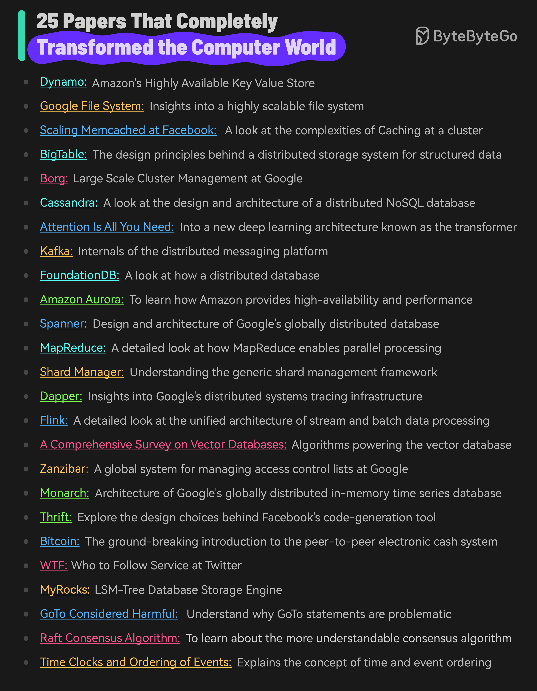

Here are 25 papers that have significantly impacted the field of computer science:
Google File System: Insights into a highly scalable file system
Scaling Memcached at Facebook: A look at the complexities of Caching
BigTable: The design principles behind a distributed storage system
Cassandra: A look at the design and architecture of a distributed NoSQL database
Attention Is All You Need: Into a new deep learning architecture known as the transformer
Kafka: Internals of the distributed messaging platform
FoundationDB: A look at how a distributed database
Amazon Aurora: To learn how Amazon provides high-availability and performance
Spanner: Design and architecture of Google’s globally distributed database
MapReduce: A detailed look at how MapReduce enables parallel processing of massive volumes of data
Shard Manager: Understanding the generic shard management framework
Dapper: Insights into Google’s distributed systems tracing infrastructure
Flink: A detailed look at the unified architecture of stream and batch processing
Zanzibar: A look at the design, implementation and deployment of a global system for managing access control lists at Google
Monarch: Architecture of Google’s in-memory time series database
Thrift: Explore the design choices behind Facebook’s code-generation tool
Bitcoin: The ground-breaking introduction to the peer-to-peer electronic cash system
WTF - Who to Follow Service at Twitter: Twitter’s (now X) user recommendation system
Raft Consensus Algorithm: To learn about the more understandable consensus algorithm
Time Clocks and Ordering of Events: The extremely important paper that explains the concept of time and event ordering in a distributed system